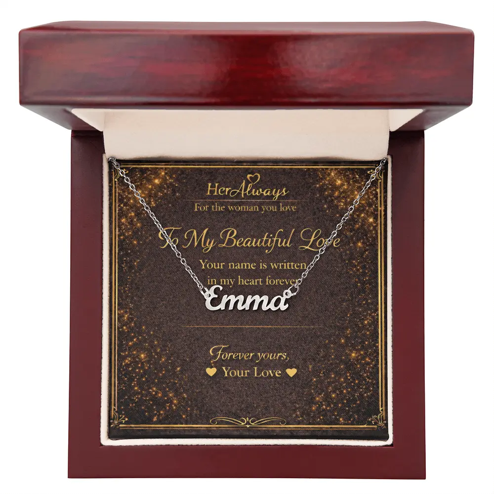

Necklace symbols can represent different meanings such as love, protection, strength, and personal connection.
Popular symbols like the heart, infinity, and love knot represent romance, while others like the evil eye and tree of life symbolize protection and growth.
Because a necklace is worn close to the heart, a necklace that symbolizes love is one of the most meaningful gifts you can give. Understanding what each symbol means helps you choose one that truly fits your relationship, from a first gift to a wedding anniversary. For the wider picture across rings, bracelets and earrings too, see what giving jewelry symbolizes.
Last updated: · Written by Elena Marsh, gift guide editor at HerAlways
Necklace Symbols & Their Meanings (Quick Guide)
Jump to: Infinity | Love Knot | Heart | Interlocking Hearts | Name | Birthstone | Initial | Locket | Moon | Butterfly | Tree of Life | Evil Eye | Anchor | Cross | Key
| Symbol | Meaning | Best For |
|---|---|---|
| Infinity | Endless love | Anniversaries, long distance |
| Love Knot | Deep commitment, unbreakable bond | Serious relationships |
| Heart | Love and affection | Romantic gifts, any stage |
| Interlocking Hearts | Two hearts joined as one | Birthdays, Valentine's Day |
| Name | Made only for her | Personal, one-of-a-kind gifts |
| Birthstone | Her month, her identity | Birthdays |
| Initial | Personal connection, understated | Minimal style lovers |
| Locket | Memories and closeness | Sentimental gifts |
| Moon | Connection across distance | Long-distance love |
| Butterfly | Change and new beginnings | New chapters |
| Tree of Life | Growth and deep roots | Long-term partners |
| Evil Eye | Protection from negativity | Someone who values the tradition |
| Anchor | Stability and hope | A steady partner |
| Cross | Faith and devotion | Shared faith |
| Key | Trust and an open heart | Playful, romantic gestures |
Our recommendation: If the relationship is serious and long-term, the Love Knot Necklace is one of the most meaningful options. If you are not sure which symbol to choose, or you want the message to do the talking, the Forever Love Necklace is our safest pick.
Infinity Necklace Meaning in Love

Best for: Long-distance relationships and anniversaries
The infinity symbol represents endless love and eternal connection. It is a figure-eight lying on its side, a loop with no beginning and no end. The sign itself comes from mathematics: the English mathematician John Wallis introduced it in the 1650s, and jewelry later borrowed it as a simple way to say "this does not stop."
That is why an infinity necklace meaning in love is tied to continuation rather than to one moment, and why it is popular for anniversaries and for couples who spend time apart. It also tends to be a light, everyday design, so it suits someone who prefers simple jewelry.
Think twice if: you want a symbol that signals a specific commitment. For that, the love knot below says more.
Shopping for a wife's anniversary? See our guide to choosing an anniversary necklace for your wife, with picks by year of marriage. You can learn more in our detailed infinity necklace meaning guide.
Love Knot Necklace Meaning

Best for: Serious relationships and commitment gifts
The love knot necklace meaning is two lives tied together. A knot with no visible start or end appears in many traditions, including Celtic art, and the "true lover's knot" has long been a romantic emblem in Europe. The idea is the same everywhere: two strands joined so they cannot easily come apart.
Because of this, the love knot is often considered one of the most meaningful necklace symbols for romantic relationships. It is usually chosen once a relationship has moved past the early stages into something you both know is lasting.
Think twice if: the relationship is new or casual. A knot can feel heavy as a first gift, and a heart or infinity necklace is an easier fit.
You can learn more in our detailed love knot necklace guide.
Love Knot vs Infinity: What's the Difference?
Choose Love Knot if: You want a deeper symbol of commitment
Choose Infinity if: You want a simple symbol of endless love
Heart Necklace Meaning

Best for: Almost any romantic occasion, at any stage of a relationship
The heart is the most universal symbol of love. It has been tied to romantic love in European art since the Middle Ages, and today it needs no explanation. A single heart says it plainly: affection, romance, and "you have mine."
Our Forever Love Necklace is a heart pendant with a clear stone set inside the outline, paired with a message card. Because the heart is understood by everyone and the message does the talking, it is the one we suggest when you are unsure what to pick.
Think twice if: she prefers very minimal jewelry or avoids classic romantic styles.
You can learn more in our detailed heart necklace meaning guide.
Interlocking Hearts Necklace Meaning

Best for: Birthdays, Valentine's Day, and a first meaningful gift
Two interlocking hearts mean two people joined as one. Each heart stays its own shape while the two are linked together, which is why the design is read as a partnership rather than a single feeling.
In our Interlocking Hearts Necklace, one heart is in a rose-gold tone and the other in a silver tone, so the two hearts look distinct even as they are joined. It is widely understood, so it works whether you have been together for months or decades.
Think twice if: she likes modern or minimalist styles, or you want a symbol that signals deeper commitment. Choose the love knot in that case.
You can read the full breakdown in our interlocking hearts necklace meaning guide.
Name Necklace Meaning

Best for: A personal, one-of-a-kind gift
A name necklace carries no shared symbol. Its meaning is entirely hers, because it is her name. It says "this was made for you and nobody else," which is a different message from a symbol that anyone could wear.
It suits someone who notices details, and it works for birthdays, anniversaries and surprises where the gift itself should feel unmistakably personal. Two practical tips: use the name she actually goes by, and double-check the spelling before you order.
Think twice if: you are unsure which name she prefers, or she would rather have a symbol with a shared meaning. A name can also feel like a big step very early in a relationship.
Birthstone Necklace Meaning
Best for: Birthdays and gifts that celebrate who she is
A birthstone necklace represents the month someone was born. Birthstones have been linked to months for centuries, and the modern list used in the United States was standardized in the early 1900s, so most people know which stone is "theirs."
That personal tie is the point. A birthstone says "I know you" more than it says "I love you," which makes it a thoughtful choice for a girlfriend, a daughter or a friend. Check her birth month first, and note that some months have more than one traditional stone.
Initial Necklace Meaning
Best for: Someone who prefers minimal, everyday jewelry
An initial necklace features the first letter of a name. It is a quieter version of a name necklace: personal, elegant, and easy to wear every day without drawing attention.
The letter can be hers, yours, or the first letter of a child's name, so the meaning depends on whose initial you choose. Many couples like it because it represents a relationship while staying understated. Choosing her own initial is the safest option if you are unsure.
Locket Necklace Meaning
Best for: Sentimental people and meaningful milestones
Lockets are sentimental necklaces that hold a photo or a small message inside. They were especially popular in the Victorian era, when people wore them to keep a portrait, or a lock of hair, close to the heart.
Because a locket holds something private, it symbolizes memories and emotional closeness rather than a single idea like forever. It is often considered one of the most romantic necklace gifts, since you decide what goes inside. Think about the photo or words before you buy, and make sure the locket is large enough to hold them.
Moon Necklace Meaning in Love
Best for: Long-distance relationships
A moon necklace symbolizes a deep emotional connection and the idea that two people stay connected even when apart. The moon is also something two people in different places can look at, which is why it feels natural for couples who live far from each other.
Across many cultures the moon is tied to cycles, guidance and loyalty: it changes shape but always returns. That makes it a fitting symbol for a love that stays steady through change.
You can learn more in our detailed moon necklace meaning guide.
Butterfly Necklace Meaning in Love
Best for: New chapters and fresh starts
A butterfly necklace represents transformation, growth, and new beginnings. The butterfly begins as a caterpillar and changes completely, so it stands for change that turns out beautiful. In ancient Greek, the same word, psyche, meant both "soul" and "butterfly."
In love, it suits a relationship that is starting a new chapter, such as a move, a shared home or a recovery from a hard time. It is less about forever and more about growing together.
You can learn more in our detailed butterfly necklace meaning guide.
Tree of Life Necklace Meaning
Best for: Long-term partners and family-minded gifts
The tree of life symbolizes growth, strength, and deep connection. Versions of it appear in many cultures and traditions, from Celtic art to Norse myth, and the common idea is a tree whose roots go down as far as its branches reach up.
In a relationship, it represents a love that grows stronger over time and stays deeply rooted. It also carries family meaning, so it works well for a partner, a mother or a daughter.
Evil Eye Necklace Meaning
Best for: Someone who values the tradition
The evil eye is an amulet believed to protect against envy and negative energy. It is found across the Mediterranean, the Middle East and South Asia, and it is often shown as a blue eye, sometimes called a nazar.
It is not a romantic symbol on its own. Giving one means "I want you protected," which is caring in its own way. Because it comes from specific traditions, it lands best with someone who knows and likes the symbol. If she does not, pick a love symbol instead.
Anchor Necklace Meaning
Best for: A steady, grounding partner
An anchor necklace represents stability, strength, and hope. Anchors have long been tied to sailors and to the idea of staying put in a storm, and in older Christian imagery the anchor was a symbol of hope.
In love, it symbolizes a partner who keeps you steady and secure during difficult times. It suits someone who values calm and loyalty over grand gestures, and it works for both women and men.
Cross Necklace Meaning
Best for: A partner who shares your faith
The cross is a symbol of faith, devotion, and spiritual connection. Its meaning is religious first, so it can represent shared beliefs and deep trust in a relationship when both people hold them.
This is a symbol to give only if you are sure it fits. If she is not religious, or her faith differs from yours, a cross can feel like a mismatch no matter how well meant. When in doubt, choose a symbol with a more universal meaning.
Key Necklace Meaning
Best for: Playful, romantic gestures
A key necklace symbolizes trust and giving someone access to your heart. The idea of a "key to my heart" is an old romantic phrase, and a key is a simple way to make it literal.
It is often paired with a lock or a heart, so one partner wears the key and the other wears the lock. Used that way, it becomes a matching gift for two. On its own it works as a lighthearted gesture of emotional openness.
Which Necklace Symbolizes Love the Most?
While many necklace symbols represent love, the most meaningful choices are the love knot, the infinity symbol, and the heart. The love knot is often considered the strongest symbol because it represents an unbreakable bond and long-term commitment.
How to Choose a Necklace That Symbolizes Love
If you are wondering what necklace to buy your girlfriend, start with where the relationship is, not with the symbol.
- Early or new: a heart or interlocking hearts is light and widely understood.
- Serious and long-term: a love knot or infinity says more.
- Far apart: a moon or infinity necklace fits distance well.
- She values personal gifts: a name, initial or birthstone necklace.
- Think about daily wear: choose something she can wear every day, in her own style.
If you are choosing between styles, our guide to the best necklace gifts for your girlfriend compares the top options.
A Meaningful Necklace Gift
Not sure which symbol to choose, or want the message to do the talking? The Forever Love Necklace is our safest pick: a heart pendant with a message card in a luxury gift box. If the relationship is serious and long-term, the Love Knot Necklace says more.
Related Guides
- What giving jewelry symbolizes, across rings, necklaces, bracelets and earrings
- 12 best necklace gifts for your girlfriend
- Necklace gift meaning in a relationship, by occasion
- Romantic gift ideas for your girlfriend, including options beyond a necklace
- Anniversary necklace for your wife
- The full HerAlways romantic jewelry collection
About This Guide
This guide is written by Elena Marsh for HerAlways. We chose the symbols that come up most often in romantic jewelry, including the five designs in our own collection. The meanings are traditional and widely shared, not rules; what matters most is what a symbol means to the two of you. Historical notes are general summaries. Because we sell necklaces, we point to our own designs where they fit, and we say so when a symbol is not the right choice.
FAQ – Necklace Symbols and Love Meanings
What necklace symbolizes love?
Necklaces such as heart necklaces, infinity necklaces, and love knot necklaces are commonly considered symbols of love. These designs represent emotional connection and lasting commitment.
What does a necklace symbolize in a relationship?
A necklace often symbolizes love, connection, and emotional closeness because it is worn near the heart.
Is a necklace a romantic gift?
Yes. Necklaces are one of the most romantic jewelry gifts because they symbolize affection and meaningful memories.
What necklace should I buy my girlfriend?
Popular choices include heart necklaces, infinity necklaces, personalized name necklaces, and love knot necklaces because they represent love and emotional connection.
What is the moon necklace meaning in love?
A moon necklace symbolizes deep emotional connection and the idea that two people stay connected even when apart. Because the moon represents guidance and loyalty, it is often seen as a symbol of lasting love.
Which necklace symbol makes the best meaningful gift?
The best meaningful necklace gifts are ones with clear symbolism: a love knot necklace for deep commitment, an infinity necklace for endless love, or a heart necklace for romantic affection.
What symbol represents love?
Common symbols that represent love include the heart symbol, infinity symbol, and love knot design. These symbols are widely used in jewelry to represent emotional connection and lasting commitment.
Final Thoughts
Choosing a meaningful necklace lets you give a gift that represents your relationship and the memories you share. Symbols like hearts, infinity designs, and love knots carry deep emotional meaning, which is why they make such lasting romantic gifts.